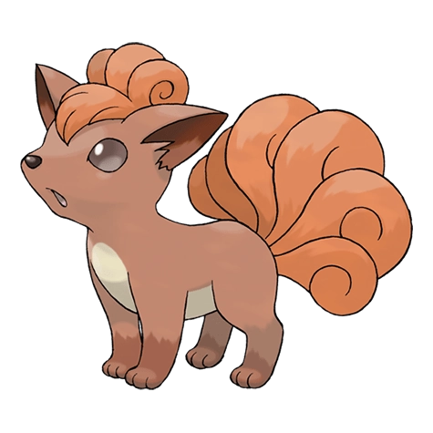

Назад
Вульпикс

Вульпикс — Покемон 1 поколения под номером 37 в Покедекс. Обитает он в регионе Канто и относится к Огненому типу. На момент рождения у Валпикса всего один хвост. Хвост разделяется на шесть частей, если за этим Покемоном очень хорошо ухаживает его тренер. Шесть хвостов великолепно закручиваются.
Тип:
Огненый
Эволюция
# 037 Вульпикс
=>
# 038 Найнтэйлс